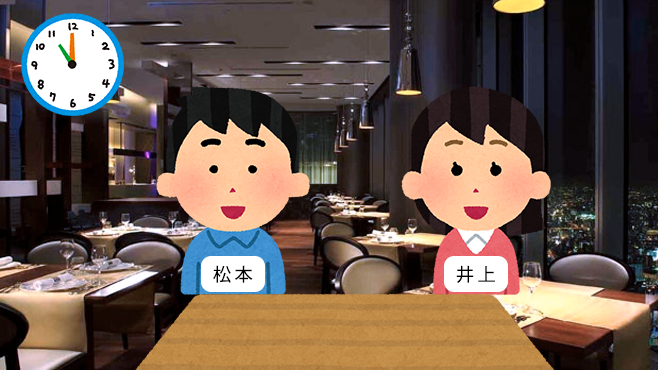
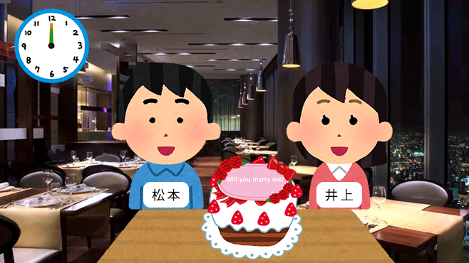
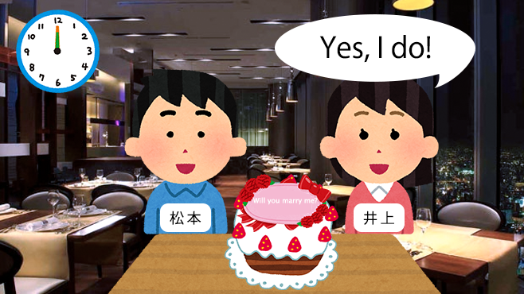
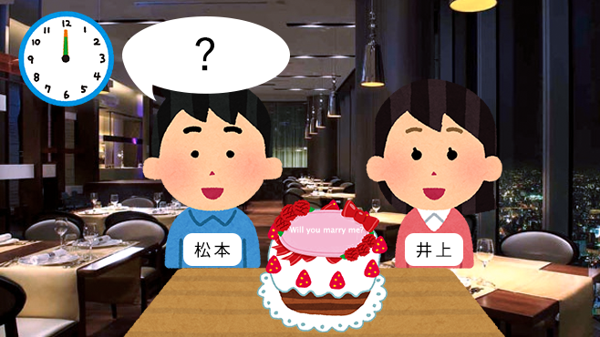

| 北海道 | 路線バス事故、11人軽傷 北海道、電柱に衝突 | 18:24 |
|---|---|---|
| 景表法違反でホクレン謝罪、会長「再発防止努める」 | 30日 7:01 | |
| 東北 | バスケのハピネッツ、試練のシーズン | 30日 7:01 |
| ＬＣＣのピーチ、仙台の拠点化へ前進 | 30日 7:00 | |
| 関東 | 認知症予防へ睡眠チェック、パラマウントベッドなど川崎で実験 | 30日 7:01 |
| 元気寿司、統合後もブランド・店舗存続 | 30日 7:01 | |
| 東京 | 豊洲市場の使い勝手、青果業者が確認 | 7:20 |
| 波紋呼ぶ副知事人事 小池氏、国政転身を否定？ | 30日 7:01 | |
| 信越 | 山崎製パン、長野県とコラボ商品 リンゴ使用 | 30日 7:00 |
| 日本精機、運転手前方に情報映す装置 日英で生産拡充 | 30日 7:00 | |
| 東海 | 弘道会会長ら７人を再逮捕 別の店からみかじめ料徴収容疑 愛知県警 | 19:00 |
| イノシシに襲われ男性軽傷 ＪＲ多治見駅近く | 18:58 | |
| 北陸 | 福邦銀、Ｔポイントと提携 利用情報を商品提案に活用 | 30日 7:01 |
| 渋谷工業、選果作業にロボの手 慶大と新システム | 30日 7:00 | |
| 関西 | バス乗客、カメラで把握 スバルカーベル、点呼負担減 | 30日 6:05 |
| 神明、海外に成長託す 傘下の元気寿司、スシローと統合 | 30日 6:02 | |
| 中国 | マルト製菓、アジア拡販へ新工場 蒸しケーキ生産能力２倍 | 30日 6:32 |
| 広島市中心 バス180円均一料金 広島バス・広島交通も | 30日 6:25 | |
| 四国 | 国体開幕 愛媛、観光・産品ＰＲ 新型ＬＲＴ運行・菓子や弁当 | 30日 6:32 |
| 高松の商店街、訪日客向けＩＣカード 観光案内 多言語で | 30日 6:25 | |
|
九州 沖縄 |
福岡の若者、なぜ女性多い？ 「婚活不利」嘆く女性も | 6:00 |
| 緊急着陸オスプレイを点検 米軍、沖縄・新石垣空港 | 30日 12:39更新 |